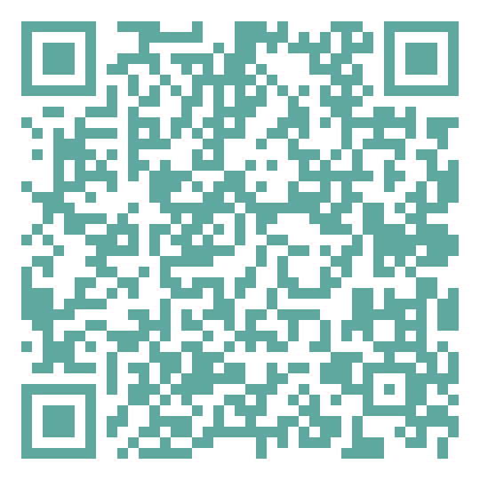

For information about research, partnerships, consulting, expert analysis, applied projects, and academic activities.
Federal University of Espírito Santo · Center for Legal and Economic Sciences · Department of Accounting
Av. Fernando Ferrari, 514 · Goiabeiras · Vitória, ES · Brazil
GECAT · Federal University of Espírito Santo, Goiabeiras Campus, Vitória/ES.
Scan the QR Code to access the official GECAT website.

gecatpesquisas.github.io/gecat.ufes.github.io